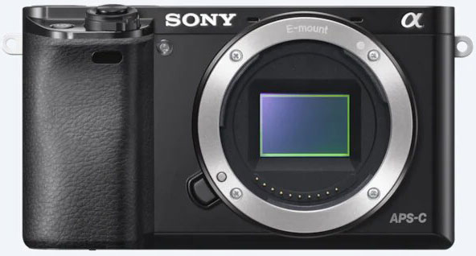
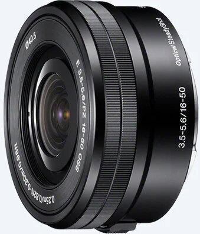
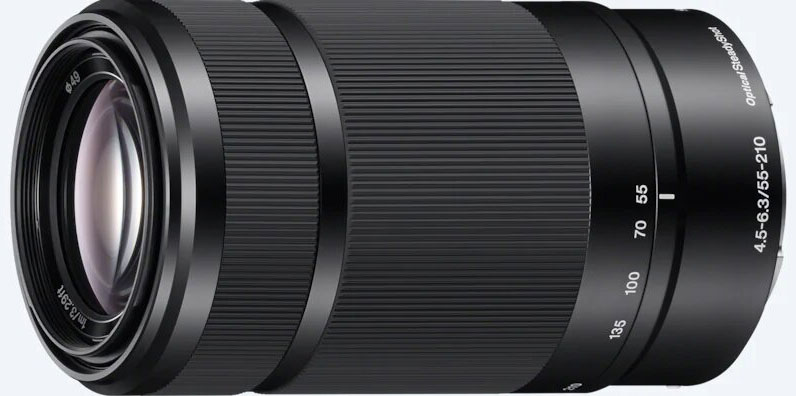

Frequently asked questions:
What equipment/gear do you use?
I use a Sony Alpha α6000 (ILCE-6000) as my base camera. My current lens includes an "E PZ 16-50mm F3.5-5.6 OSS" (SELP1650) and an "E 55-210mm F4.5-6.3 OSS" (SEL55210).
Additional equipment includes a 66 inch tripod, and a Phantom 3 Standard drone from DJI.
Macro shots are taken on a Nikon D7000 with a Sigma 70mm f/2.8 EX DG Macro Nikon F (discontinued).
